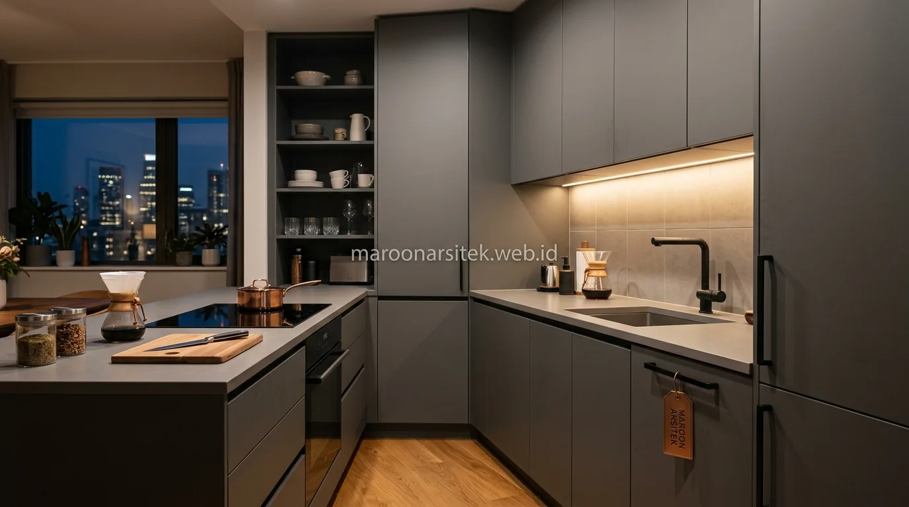

Jasa desain interior custom merancang furnitur seperti wardrobe dan kitchen set yang disesuaikan dengan dimensi ruang sebenarnya, memaksimalkan kapasitas penyimpanan tanpa mengorbankan ruang gerak pada rumah dengan luas terbatas. Maroon Arsitek melalui layanan jasa desain interior custom merancang solusi interior yang benar-benar memanfaatkan setiap sudut ruang, berbeda dari furnitur standar yang belum tentu sesuai proporsi ruang klien.
Keterbatasan ruang sering membuat pemilik rumah mengorbankan kebutuhan penyimpanan demi menjaga ruang gerak tetap lapang, padahal kedua kebutuhan tersebut dapat dipenuhi secara bersamaan melalui perancangan furnitur yang tepat. Bagian berikut menguraikan pendekatan desain custom yang menjawab kebutuhan tersebut.
Wardrobe Custom yang Menyesuaikan Dimensi Ruang Kamar
Wardrobe custom dirancang sesuai dimensi aktual ruang kamar, memanfaatkan sudut dan area yang sering terbuang pada furnitur standar, sehingga kapasitas penyimpanan dapat dimaksimalkan tanpa mengurangi ruang gerak di dalam kamar. Pendekatan ini menjadi solusi utama bagi kamar dengan luas terbatas.
Perancangan mempertimbangkan tinggi plafon dan bentuk ruang secara spesifik, termasuk pemanfaatan area di atas pintu atau sudut ruang yang sering tidak termanfaatkan pada wardrobe siap pakai dengan ukuran standar pabrikan.
Pembagian kompartemen di dalam wardrobe disesuaikan dengan kebiasaan penyimpanan penghuni, mencakup area gantung, laci, dan rak terbuka dalam proporsi yang disesuaikan kebutuhan, bukan pembagian generik yang belum tentu sesuai kebiasaan setiap orang. Anda juga dapat memadukannya dengan konsep interior apartemen studio multifungsi untuk hunian vertikal.
Pemanfaatan Sudut Ruang yang Sering Terbuang
Kebutuhan kapasitas penyimpanan maksimal dijawab melalui pemanfaatan sudut ruang yang sering terbuang pada furnitur standar, seperti sudut kamar atau area di bawah plafon miring, yang dirancang khusus sesuai bentuk ruang tersebut.
Pemanfaatan sudut ini menambah kapasitas penyimpanan signifikan tanpa memerlukan penambahan luas ruang, karena area yang sebelumnya tidak terpakai kini difungsikan sebagai bagian dari sistem penyimpanan wardrobe custom.
Kitchen Set Custom dengan Penyimpanan yang Tertata Rapi
Kitchen set custom dirancang dengan sistem penyimpanan yang tertata sesuai jenis dan frekuensi penggunaan peralatan dapur, memaksimalkan kapasitas pada area dapur yang umumnya memiliki keterbatasan ruang di rumah perkotaan. Perancangan ini memastikan setiap peralatan memiliki tempat yang sesuai tanpa membuat area kerja dapur terasa sempit.
Pembagian area penyimpanan mempertimbangkan alur kerja memasak, menempatkan peralatan yang sering digunakan pada area yang mudah dijangkau, sementara peralatan yang jarang digunakan ditempatkan pada bagian yang lebih tersembunyi namun tetap mudah diakses saat dibutuhkan.
Pemilihan material dan hardware kitchen set disesuaikan dengan kondisi dapur yang lembap dan sering terkena panas, memastikan daya tahan furnitur tetap terjaga meski digunakan dengan intensitas tinggi setiap hari bersama tim jasa arsitek dan perencanaan interior kami.

Penataan Area Penyimpanan sesuai Alur Kerja Memasak
Kebutuhan efisiensi saat memasak dijawab melalui penataan area penyimpanan yang mengikuti alur kerja, mulai dari area persiapan bahan, memasak, hingga penyimpanan peralatan bersih, sehingga aktivitas memasak berjalan lebih efisien.
Penataan ini mengurangi pergerakan yang tidak perlu saat memasak, karena setiap peralatan dan bahan ditempatkan sesuai urutan penggunaan dalam proses memasak sehari-hari, bukan disusun secara acak tanpa mempertimbangkan alur kerja.
Optimalisasi Ruang Multifungsi untuk Kebutuhan Tambahan
Ruang dengan fungsi ganda menjadi solusi tambahan bagi rumah dengan keterbatasan luas, di mana satu area dapat difungsikan untuk beberapa kebutuhan berbeda melalui perancangan furnitur yang fleksibel dan dapat disesuaikan penggunaannya. Pendekatan ini melengkapi solusi wardrobe dan kitchen set custom yang telah dirancang sebelumnya.
Furnitur dengan fungsi ganda, seperti meja kerja yang dapat berubah menjadi meja rias, atau rak yang berfungsi sekaligus sebagai partisi ruang, membantu memaksimalkan fungsi tanpa memerlukan penambahan furnitur terpisah yang memakan ruang lebih banyak.
Perancangan ruang multifungsi mempertimbangkan kebutuhan penghuni secara spesifik, memastikan setiap elemen furnitur yang ditambahkan benar-benar memberikan nilai fungsional, bukan sekadar menambah jumlah furnitur tanpa manfaat yang jelas. Dapatkan juga pengerjaan berkualitas tinggi melalui jasa interior rumah Jabodetabek dari Maroon Arsitek.
Furnitur dengan Fungsi Ganda untuk Efisiensi Ruang
Kebutuhan efisiensi ruang tambahan dijawab melalui perancangan furnitur dengan fungsi ganda, seperti meja lipat yang dapat berubah fungsi sesuai kebutuhan waktu tertentu, sehingga satu area ruang dapat mengakomodasi lebih dari satu aktivitas.
Pendekatan ini memberikan fleksibilitas tambahan bagi penghuni rumah dengan ruang terbatas, tanpa perlu mengorbankan salah satu kebutuhan demi kebutuhan lain yang sama pentingnya dalam keseharian.